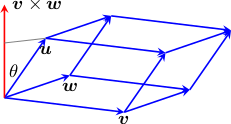

Scalar triple product
Definition 1.12.1. For every three vectors u,v and w in ℝ3, the scalar triple product is u · (v × w). □
Consider the parallelepiped with edges formed by three vectors u,v and w in ℝ3, as illustrated in stereo below. We shall show that the scalar triple product is equal volume of the parallelepiped.
The height of the parallelepiped is then that part of u in the direction of a normal vector to v and w. We know that v × w is orthogonal to both v and w (Theorem 1.10.4a), so by trigonometry the height must be |u| cos θ for angle θ between u and v × w, as illustrated above.
The base of the parallelepiped is the parallelogram formed with edges v and w. Hence the base has area |v × w| (Theorem 1.10.4d). This cosine is determined by the dot product
u · (v × w) = cos θ |u| |v × w|
cos θ = u · (v × w) / (|u| |v × w|)
The height of the parallelepiped is then
The volume of the parallelepiped is then